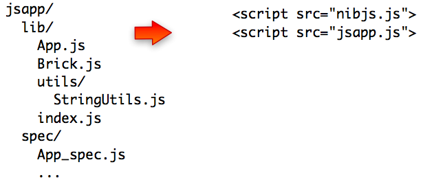

NibJS - Package CommonJS applications for the browser
NibJS packages javascript and coffeescript applications for the browser. It implements the module specification of CommonJS to let you develop and test under node.js while ensuring that you'll be able to deploy inside a browser without pain.

NibJS is distributed as a rubygem under a MIT licence.